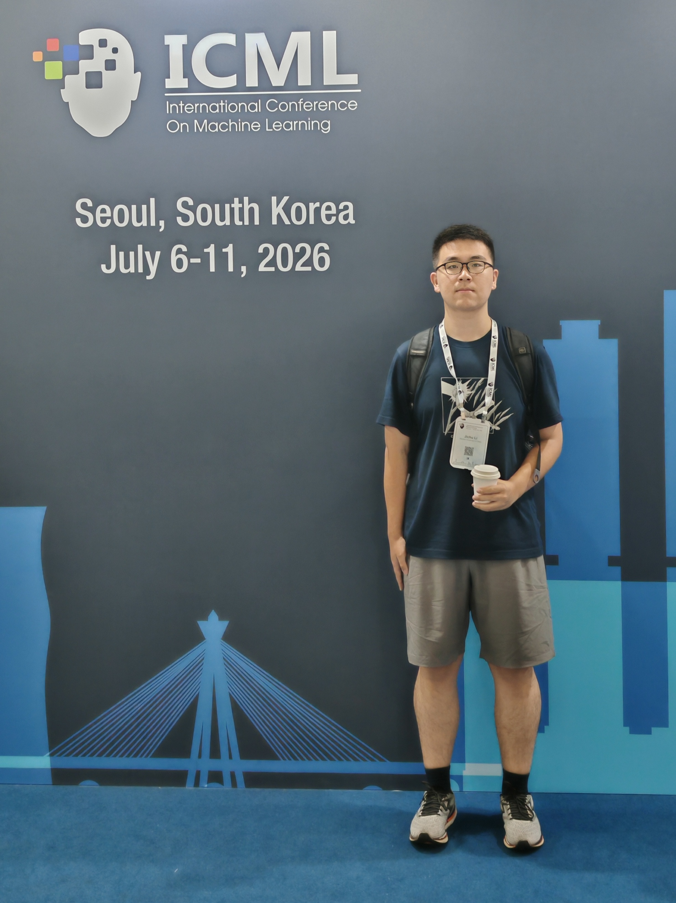
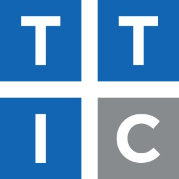

{kind=link}
Learning with Synthetic Data via SGD in High-Dimensional Linear Regression
In submission
ICML Workshop on High-dimensional Learning Dynamics (HiLD 2026)

Welcome to my homepage!
I’m Jichu Li, currently an undergraduate student in the Honors Talent Program in Statistics and Data Science at Renmin University of China. I'm also a visiting student at Toyota Technological Institute at Chicago, hosted by Prof. Zhiyuan Li.
During my research journey, I had the fortune to work with Prof. Difan Zou on learning theory at The University of Hong Kong and Prof. Feng Zhou on multimodal time-series modeling at Renmin University of China.
My research interests lie at the intersection of machine learning theory and optimization. I am dedicated to building a rigorous theoretical understanding of modern optimization algorithms in deep learning, analyzing their convergence, implicit bias, and generalization. At the same time, I am interested in applying these theoretical insights to the design and analysis of large language models (LLMs/MLLMs), including LLM-based approaches for modeling complex sequential and event-based data.
I am currently seeking PhD opportunities in CS/Statistics/IEOR starting 2027 Fall. Please feel free to email me if you’d like to connect!
In submission
ICML Workshop on High-dimensional Learning Dynamics (HiLD 2026)
International Conference on Machine Learning (ICML) 2026
International Conference on Learning Representations (ICLR) 2026
International Conference on Learning Representations (ICLR) 2026
Neural Information Processing Systems (NeurIPS) 2025

(Sep. 2024&2025) National Scholarship. (Twice) (Highest scholarship from the Ministry of Education of China. ￥20000)
(Jul. 2025) HKU Summer Research Stipend. (The University of Hong Kong. HK$ 19600)
(May. 2025) Honorable Mention. (Mathematical Contest in Modeling and Interdisciplinary Contest in Modeling)
(Dec. 2024) Provincial First Prize. (Mathematics competition of Chinese College Students, CMC)
(Nov. 2024) Provincial First Prize. (Contemporary Undergraduate Mathematical Contest in Modeling)
Neural Information Processing Systems (NeurIPS; 2026)
International Conference on Machine Learning (ICML; 2026)
Optimization Methods, Fall 2026.
Statistical Investigation Association of Renmin University of China (2024-now)